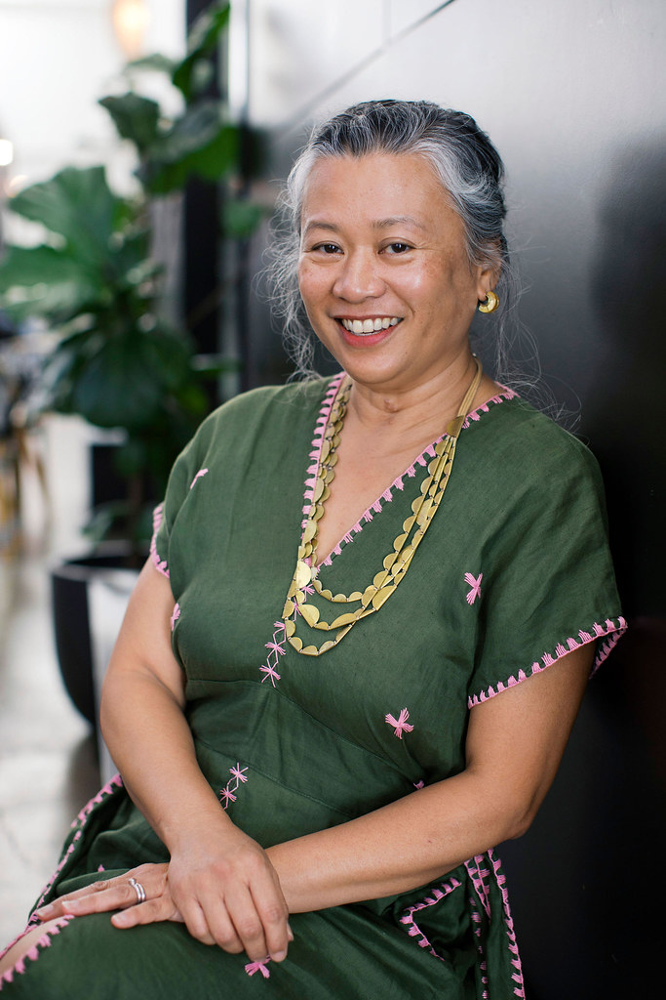

Kapwa Studio is a strategic thought partner for leaders and organizations navigating complex systems transformation, working from the Filipino indigenous understanding that self and others are deeply interconnected.
Stay connectedIn a world where systems routinely fragment people from their own dignity and from each other, kapwa holds that the self and others are deeply interconnected. It is both a philosophy and a practice of resilience. The Kapwa Studio methodology centers trust, belonging, and reciprocity.
Who want to lead from a place of deep connection to themselves and others.
Ready to share power and redesign how they relate to the communities they serve.
Building the trust and relational infrastructure needed to achieve collective well-being and justice.
Engagements take many forms, from one-on-one coaching to organizational sensemaking and advisory, to large-scale facilitated gatherings and retreats. They integrate strategic advisory with structured improvement, human-centered design, and systems thinking, all rooted in kapwa.
This work is expressed through embodied practice, including workshops, facilitated reflection, somatic practice, and narrative approaches.
Engagements are designed as genuine, generative partnerships with the leaders and organizations we work with, drawing on a constellation of collaborators, consultants, and practitioners who bring diverse worldviews, perspectives, and practices into the work. Kapwa Studio is a place of making, collaboration, and practice.

As a leader for health equity, Kristene coaches and consults with organizations and individuals to center equity, share power with those most harmed by inequities, and implement strategies that address the structural and systems barriers to equity and justice.
In her role as Chief Program and Equity Officer at the Center for Care Innovations, she and her team build strong partnerships with community health clinics, community based organizations, multisector partnerships, and community members to better understand and eliminate health disparities.
Prior to joining CCI, Kristene founded Cristobal Consulting, combining equity technical assistance with improvement, leadership, and organizational development to support change, impact, and accountability for equitable outcomes. Kristene has nearly 30 years of experience in program and curriculum design, strategic planning, and teaching and coaching teams in quality improvement, program evaluation, and equity technical assistance, partnering with community based organizations, health care delivery systems, community health centers, health plans, academic institutions, government agencies, and foundations to do so. Kristene earned her master's degree in maternal and child health from Harvard T.S. School of Public Health, master's degree in creative writing from Victoria University of Wellington, and bachelor's degree in neuroscience from Oberlin College. When not working on her novel, Kristene enjoys West African and Hawaiian dance and singing in community choirs.
Magsulat serves people through story coaching, developmental editing, and writing retreats, integrating writing as a healing and reflective practice inside the broader studio work.
Occasional notes on the practice, the people, and what's ahead.